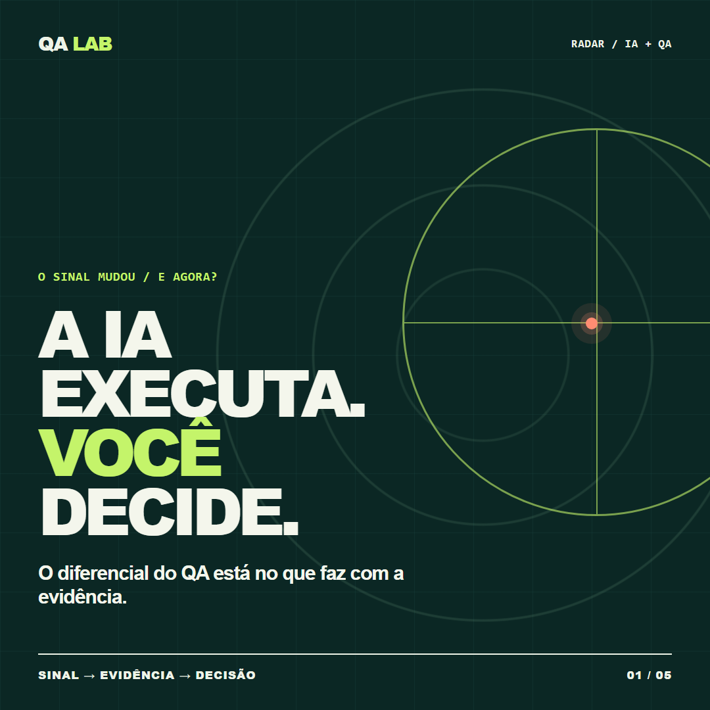
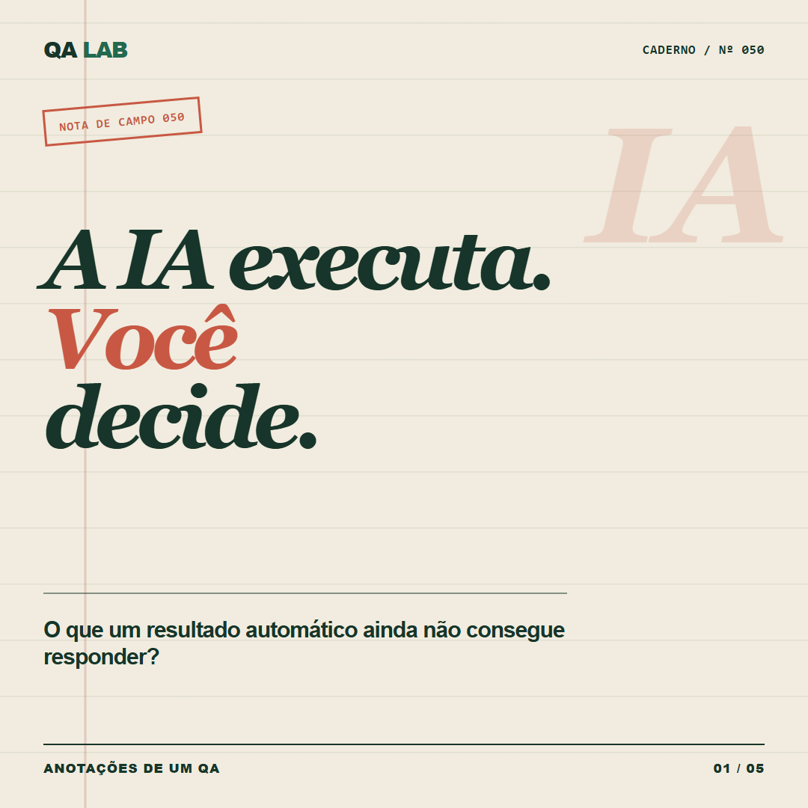
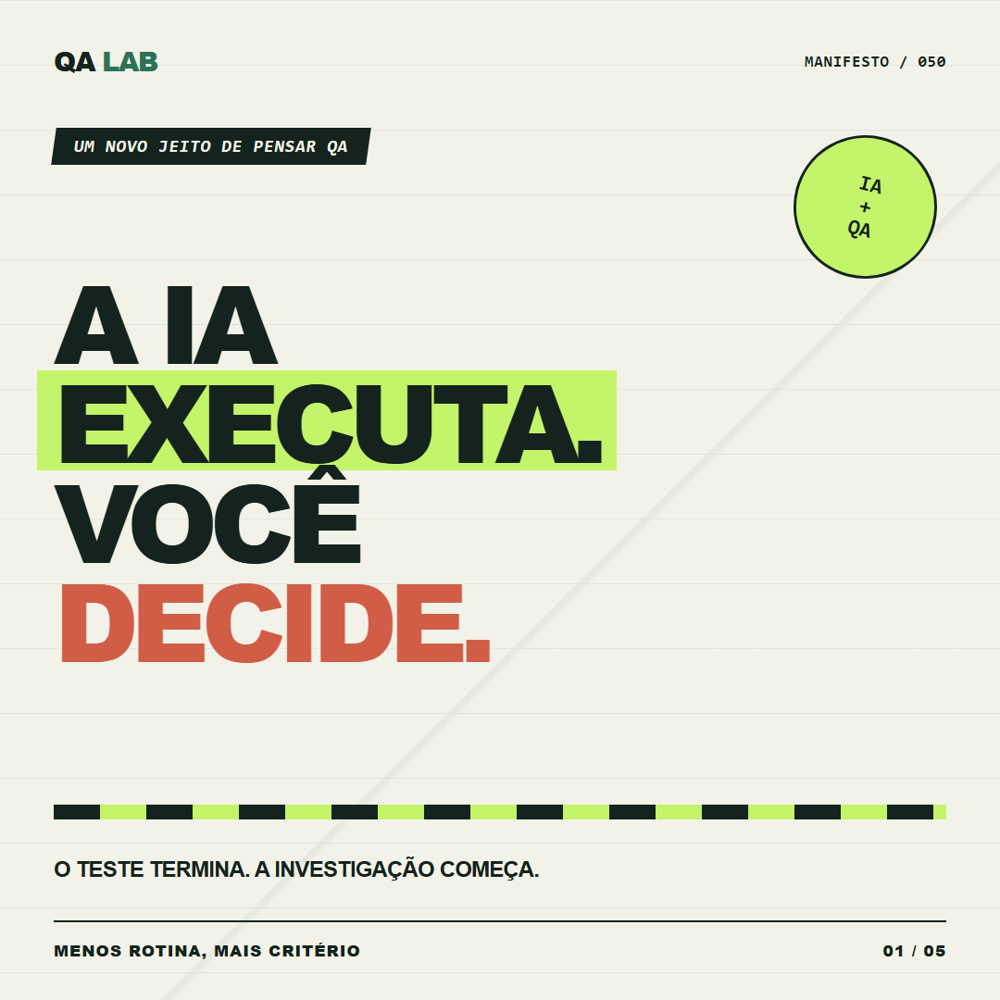

Dossiê de investigação ↗
O primeiro estilo aprovado: evidência, comparação e decisão em uma sequência visual.

Radar de risco ↗
Círculos de varredura, pontos de risco e uma narrativa que avança do sinal para a decisão.

Caderno de campo ↗
Papel, carimbos e anotações técnicas; a evidência vira uma história de investigação.

Terminal de decisões ↗
Interface técnica, comandos e estados: uma visualização de QA que vai além do “teste verde”.

Cartaz de decisão ↗
Tipografia de cartaz, cortes diagonais e blocos de cor para posts de opinião com ritmo forte.